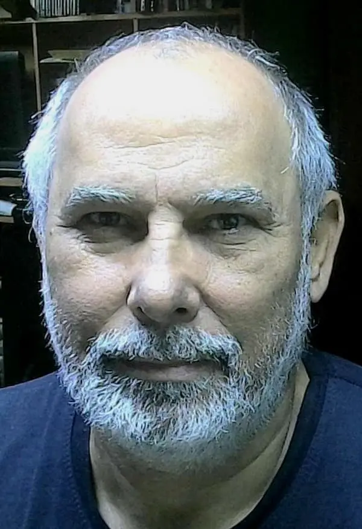

Fernando Luis Ferreira | WDD 130

Meu nome é Fernando Luis Ferreira, nascido e criado na cidade de São Paulo. Atualmente, eu moro na cidade de Campinas, São Paulo, Brasil. Sou casado com Giselle e temos dois filhos: Fernando Junior e Giovanna. Gosto de fotografia, cozinhar, fazer churrasco, aprender coisas novas e de andar de motocicleta.